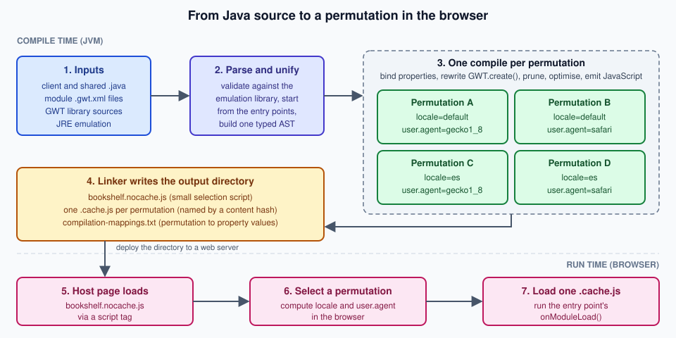

Introduction & Architecture
|
This content was generated with the assistance of AI and should be verified against the official documentation before being relied on in production. |
This page is written against GWT 2.13.1 (released 2026-06-19), gwt-maven-plugin 1.3.0 (net.ltgt.gwt.maven), JDK 21 running the tools with source level 17 and Jakarta Servlet 6, checked on 2026-10-08, and
every example was compiled and, where it has a visible result, run in a browser on that stack. It is the map of the whole GWT section: it explains what GWT is, how its compiler
works and where the code you write runs. The code is mostly client code (compiled to JavaScript), with the shared classes that both the browser and the server use and the server
classes that stay on the JVM; the Maven build is shown only as far as it is needed to produce the output. The running scenario of the section, the Bookshelf (a catalogue of books that
later gains authors, reviews and loans), starts here as a three-module application: bookshelf-shared, bookshelf-client and bookshelf-server. The other pages of this section (Getting Started,
Project Structure & Modules, Compiler & Compilation, Development Mode & Debugging,
JRE Emulation & Shared Code, JsInterop, Widgets, GWT-RPC,
Testing, J2CL & the Future and the rest) are written to be read after this one. The rest are Build Tools, Styling, ClientBundle & Images, HTML5 Features, Accessibility & ARIA, Validation, Logging, Code Splitting, Linkers & Bootstrap, Compile Reports & Optimization, Deferred Binding & Generators, Delayed Logic & Scheduler, Events & Handlers, Custom Widgets & Composites, REST & JSON Libraries, Server Integration & Deployment, Ecosystem & Libraries, Tooling & IDE Support and What’s Changed & Migration.
What GWT is
GWT (Google Web Toolkit) is, first of all, a compiler: it reads Java source and writes optimised JavaScript that runs in the browser. The official overview describes it as a development toolkit for
building and optimising complex browser-based applications, so that you do not have to be an expert in browser quirks, XMLHttpRequest or JavaScript. Around that compiler sits a toolkit: a Java
class library for the browser (widgets and panels, DOM access, events, internationalisation, resources such as CSS and images, history), the GWT-RPC remote-call mechanism, JUnit-based testing
(GWTTestCase) and development tools (Super Dev Mode, compile reports). All of it is open source under the Apache 2.0 licence.
The sentence to remember is that GWT is not a server-side UI framework. Vaadin Flow, JSF and Thymeleaf keep the page logic on the server and send HTML or instructions to the browser. In GWT the user interface program itself runs in the browser, as JavaScript produced ahead of time from your Java. The server is only a data and business-logic back end that the browser calls over HTTP. The official FAQ makes the same point: the generated JavaScript is independent of the server technology, so any server-side templating or framework can produce the host page.
The simplest possible GWT application is a host page and one Java class. The host page contains a script tag that loads the generated selection script bookshelf.nocache.js and an element the Java code
can attach to:
<!doctype html>
<html lang="en">
<head>
<meta charset="UTF-8">
<meta name="viewport" content="width=device-width, initial-scale=1">
<title>Bookshelf</title>
<script src="bookshelf/bookshelf.nocache.js"></script>
</head>
<body>
<div id="app"></div>
</body>
</html>The <meta name="viewport"> line is not optional decoration: a phone browser without it reports a 980 pixel wide layout viewport, which changes the result of any width-based logic (see the worked example below).
The pieces of the toolkit that this section covers, with where each is documented in the official Developer Guide, are summarised in the next table. Each row is a topic page of this section.
| Piece | What it gives you | Status in 2.13.1 |
|---|---|---|
Compiler ( |
Java to JavaScript, output styles |
Current. Tools need Java 11 or newer (since 2.12.0). |
A subset of |
Current. Unsupported APIs are compile errors. |
|
JsInterop and Elemental2 |
Typed access to browser APIs and JavaScript libraries, and export of Java to JavaScript |
JsInterop is final since 2.8.0. The older Elemental library is deprecated since 2.9.0 in favour of Elemental2. |
JavaScript written inside Java comments |
Legacy. Prefer JsInterop; the JSNI page exists for maintaining old code. |
|
|
Current. Declared with UiBinder ( |
|
Cell widgets and Editors |
|
Current (cell widgets since 2.1, |
|
Current. |
|
Browser history tokens and the MVP navigation framework |
Current (framework since 2.1). |
|
|
Current. GWT-RPC has a Java 17 serialisation pitfall, described in the pitfalls table below. |
|
|
Current. Since 2.0 it needs no native browser. |
Source: GWT — Developer Guide: overview
Client, shared and server code
A GWT project separates code by where it runs, and the module XML decides which source packages the compiler may see. There are three kinds:
-
Client code is compiled to JavaScript and runs in the browser. It may use only the JRE emulation library, the GWT library and other client libraries. This is the code in the Bookshelf’s
clientpackage. -
Shared code is compiled twice: by the GWT compiler for the browser, and by
javacfor the server JVM. It is the home of the domain objects that cross the wire (Book), of the RPC service interfaces and of validation rules. It can only use what both worlds offer: the emulated subset of the JRE. -
Server code runs on the JVM only (servlets, repositories, Spring or Jakarta code). The GWT compiler never reads it, so it can use any Java library.
Book, CatalogService
plain Java"] client["bookshelf-client
EntryPoint, views
client code"] server["bookshelf-server
servlets, repository
server code"] end gwtc["GWT compiler"] javac["javac"] shared --> gwtc client --> gwtc shared --> javac server --> javac gwtc --> js["bookshelf.nocache.js
and cache.js files"] javac --> war["WAR on a servlet container"] subgraph run["Run time"] browser["Browser
runs the JavaScript"] jvm["JVM
servlet container"] end js --> browser war --> jvm browser -- "GWT-RPC or JSON over HTTP" --> jvm
The conventional layout puts the three kinds under client, shared and server packages of one project root package, and the module file at the root of that package. The module XML names the packages the compiler may translate (the Bookshelf worked example below shows the whole file):
bookshelf-shared/src/main/java/com/example/bookshelf/shared/ Book, BookPage, CatalogService, CatalogServiceAsync
bookshelf-client/src/main/java/com/example/bookshelf/client/ IntroEntryPoint, views, presenters (translated to JavaScript)
bookshelf-client/src/main/module.gwt.xml the module: <source path="client"/> and <source path="shared"/>
bookshelf-server/src/main/java/com/example/bookshelf/server/ CatalogServiceImpl, repository (JVM only, never translated)
bookshelf-server/src/main/webapp/WEB-INF/web.xml servlet mappingsA shared class is ordinary Java with no browser or server dependency. The Bookshelf Book is serialisable by GWT-RPC (it has a default constructor and implements java.io.Serializable) and is used unchanged on both sides:
package com.example.bookshelf.shared;
import java.io.Serializable;
/** A book in the catalogue. Shared by the client (compiled to JavaScript) and the server. */
public class Book implements Serializable {
private long id;
private String title;
private String author;
private int year;
private int copies;
public Book() {}
public Book(long id, String title, String author, int year, int copies) {
this.id = id;
this.title = title;
this.author = author;
this.year = year;
this.copies = copies;
}
public String getTitle() { return title; }
public String getAuthor() { return author; }
public int getYear() { return year; }
public int getCopies() { return copies; }
}The service interface is shared too, and the same type on the server side is a servlet. This is where the Jakarta change matters: the server class extends the servlet from the rpc.jakarta package of the
gwt-servlet-jakarta artifact, while the RPC interfaces and annotations stay in com.google.gwt.user.client.rpc (the Jakarta artifacts exist since 2.11.0):
// bookshelf-shared: compiled by GWT (browser) and by javac (server)
@RemoteServiceRelativePath("catalog")
public interface CatalogService extends XsrfProtectedService {
BookPage getBooks(int start, int length);
Book getBook(long id) throws BookNotFoundException;
}
// bookshelf-server: javac only
public class CatalogServiceImpl extends XsrfProtectedServiceServlet implements CatalogService {
@Override
public BookPage getBooks(int start, int length) {
return CatalogRepository.INSTANCE.page(start, Math.min(length, 100)); // the server clamps the page size
}
@Override
public Book getBook(long id) throws BookNotFoundException {
return CatalogRepository.INSTANCE.get(id);
}
}Two consequences follow for security and design. First, everything the browser runs is under the user’s control: validation in shared code is a convenience that gives instant feedback, and the server must
repeat every check and make every authorisation decision itself (the Math.min above is the server refusing to trust the page size the client asked for). Second, shared code is a strength only while it
stays small and pure: a shared class that grows a server-only import stops compiling for the browser (the pitfalls table lists the exact error).
How the compiler works
The compilation of a client module is a fixed pipeline, drawn below for the Bookshelf client. The parts of it that explain most GWT behaviour are the next five ideas.

Ahead-of-time compilation
Everything happens before the application is deployed. The compiler starts from the <entry-point> classes of the module, follows every reference, and compiles only what it reaches. Nothing is interpreted
or loaded dynamically in the browser: the official guide states that GWT compiles the Java source into a monolithic script and does not support dynamic class loading, which is also why reflection is
not available. The two modes you will meet are development mode (Super Dev Mode recompiles incrementally and serves source maps so that you debug the Java in the browser) and production
mode (the output of the full compiler, see Compiler & Compilation); a page of this section covers each.
Permutations
The browser, the language and any other axis you define are properties. The compiler produces one complete JavaScript program for each combination of property values, called a permutation, so
that each user downloads only the code for their own browser and locale. The Developer Guide gives the intuition: "Firefox in English", "Internet Explorer in English" and so on, each compact because it
contains only what that environment needs. In 2.13.1 the user.agent property has just two values, gecko1_8 and safari (the second also covers Chromium-based browsers), so every extra locale you
enable doubles the number of permutations and every new axis multiplies it again. Build time grows with the number of permutations, the size of each output file does not.
Deferred binding
Deferred binding is how GWT replaces Java reflection and conditional compilation. A call to GWT.create(SomeType.class) is not a normal constructor call: at compile time the compiler decides, for each
permutation, which concrete class that call returns. There are two kinds of rules in the module XML, replacement (<replace-with>, a type is swapped for another depending on property values) and
code generation (<generate-with>, a generator writes the class). GWT itself uses it for the browser-specific code, for internationalisation (Messages and Constants interfaces), for
GWT-RPC proxies, for ClientBundle and for UiBinder. Because the binding is resolved at compile time, there is no runtime lookup cost.
Dead-code elimination, inlining and obfuscation
Because the compiler knows the whole program, it removes every class, method and field that cannot be reached from an entry point, inlines small methods, and shortens names. The worked example below shows
a class that is never referenced and a string that never reaches the output. This is why GWT code can lean on a large library such as com.google.gwt.user.User and still ship a small file, and why
-style PRETTY (readable names) and -style DETAILED exist for diagnosing the result.
JRE emulation and shared code
The browser has no JVM, so GWT ships its own implementation of the commonly used parts of the Java runtime, written to translate to efficient JavaScript. If a JRE class or method is not in the emulation,
the compiler reports an error (the pitfalls table shows it for java.io.File). The emulation reference lists the supported classes by package, and a 2.13.0 improvement documents the unsupported APIs with
links to issues. Source level follows the compiler: Java 8 syntax since 2.8.0, language levels 9 to 11 since 2.9.0, and Java 12 to 17 features (text blocks, instanceof patterns, records, switch expressions)
since 2.12.0. The command-line compiler’s default -sourceLevel is 1.8 (as the official pages and the -help text say), so Java 12 to 17 syntax needs an explicit -sourceLevel 17; the value auto resolves to the running JVM’s level, and the gwt-maven-plugin default comes from maven.compiler.source.
Source: GWT — JRE Emulation reference
Code that has to work on both sides can ask where it is running with GWT.isClient() (true in development mode and production mode, false on a plain JVM such as server code) and GWT.isScript() (true only in
compiled JavaScript). GWT.create() itself is usable from shared code through com.google.gwt.core.shared.GWT, and fails with a clear message when it runs on the plain JVM.
Source: GWT — Javadoc
Worked example: compiling the Bookshelf client
This example brings the ideas together, and every output below was produced by running it. It is a deliberately tiny client: one entry point, a message interface in two locales, one deferred-binding rule driven by
the window width, and a class that nothing references. It reuses the shared Book from above.
The module declares the packages, the entry point, a second locale and a custom property with its replacement rules:
<?xml version="1.0" encoding="UTF-8"?>
<module>
<inherits name="com.google.gwt.user.User" />
<inherits name="com.google.gwt.i18n.I18N" />
<source path="client" />
<source path="shared" />
<entry-point class="com.example.bookshelf.client.IntroEntryPoint" />
<extend-property name="locale" values="es" />
<!-- A binding property with a runtime provider: one more permutation axis. -->
<define-property name="density" values="comfortable,compact" />
<property-provider name="density"><![CDATA[
return window.innerWidth < 600 ? 'compact' : 'comfortable';
]]></property-provider>
<!-- Deferred-binding rules: which RowFormatter is bound for which property value. -->
<replace-with class="com.example.bookshelf.client.ComfortableRowFormatter">
<when-type-is class="com.example.bookshelf.client.RowFormatter" />
</replace-with>
<replace-with class="com.example.bookshelf.client.CompactRowFormatter">
<when-type-is class="com.example.bookshelf.client.RowFormatter" />
<when-property-is name="density" value="compact" />
</replace-with>
</module>The entry point is the code the browser runs first. It creates a localised message object and a row formatter through GWT.create(), builds a Book from the shared class, and renders the result with
Label, which writes text and never markup:
public class IntroEntryPoint implements EntryPoint {
/** Deferred binding: one implementation per locale is generated at compile time. */
public interface Texts extends Messages {
@DefaultMessage("{0} by {1} ({2,number,integer} copies)")
String line(String title, String author, int copies);
}
@Override
public void onModuleLoad() {
Texts texts = GWT.create(Texts.class);
Book book = new Book(1L, "Dune", "Frank Herbert", 1965, 3); // shared class
String text = texts.line(book.getTitle(), book.getAuthor(), book.getCopies());
RootPanel.get("app").add(new Label(text)); // Label renders text, not HTML
RowFormatter formatter = GWT.create(RowFormatter.class); // bound per 'density'
RootPanel.get("app").add(new Label(formatter.format(book)));
}
/** Never referenced from onModuleLoad(): the compiler prunes it. */
public static String neverCalledMarkerXyz() {
return "UNREACHABLE_MARKER_XYZ";
}
}
public abstract class RowFormatter {
public abstract String format(Book book);
}
public class ComfortableRowFormatter extends RowFormatter {
@Override
public String format(Book book) {
return book.getTitle() + " - " + book.getAuthor() + " (" + book.getYear() + ")";
}
}
public class CompactRowFormatter extends RowFormatter {
@Override
public String format(Book book) {
return book.getTitle();
}
}The Spanish text is a properties file next to the interface. Because Texts is a nested interface, the file name carries the $ of the binary class name:
line={0} de {1} ({2,number,integer} ejemplares)The build is one Maven command. The gwt-app packaging of gwt-maven-plugin runs the compiler as part of package, and -am builds the shared module first. The relevant lines of the real output
(Maven 3.9.16, JDK 21) show the permutation count, which is 2 locales times 2 user.agent values times 2 density values:
mvn -B -pl bookshelf-client -am packageSource: gwt-maven-plugin — documentation
[INFO] --- gwt:1.3.0:compile (default-compile) @ bookshelf-client ---
[INFO] Compiling module com.example.bookshelf.App
[INFO] Compiling 8 permutations
[INFO] Compiling permutation 0...
...
[INFO] Compiling permutation 7...
[INFO] Compile of permutations succeeded
[INFO] Compilation succeeded -- 5,367s
[INFO] Link succeeded
[INFO] BUILD SUCCESSSource: gwt-maven-plugin — gwt:compile
The generated module is named com.example.bookshelf.App by the plugin and published as bookshelf (the module short name); the directory it writes is the deployable output. It contains the small
selection script, one cache.js per permutation and a text file that maps permutations to property values:
$ ls -l target/bookshelf-client-1.0-SNAPSHOT/bookshelf
65538 09B91BD9809F3A198998C74F6B5C51D4.cache.js
66167 0D526ECC71512A709772486DADCEA9CE.cache.js
65515 1CBF6B31E8E7DCCF2824AD4828493618.cache.js
66137 62C3ADEC9011637C286F4158934BF5BB.cache.js
65522 646F665E2863CAED49C53B0C7264E618.cache.js
66160 67EFC4524DDD99A51E8831E31D50E9FB.cache.js
65545 E51C3C64BFBFD2C3AE989FC3996876EF.cache.js
66144 EB4D661FDCDDB9B346C98A366A104214.cache.js
14281 bookshelf.devmode.js
7836 bookshelf.nocache.js
43 clear.cache.gif
758 compilation-mappings.txt
$ head -5 compilation-mappings.txt
09B91BD9809F3A198998C74F6B5C51D4.cache.js
density comfortable
locale default
user.agent safariThree observations come out of that listing. The eight permutations are all about 65 KB uncompressed, so adding axes costs compile time, not download size. The names of the cache.js files are
md5 sums computed from the code at compile time, which is what lets a web server cache them for a year, while bookshelf.nocache.js keeps a stable name because it holds the lookup table and must always be revalidated (the Developer Guide calls this "perfect caching").
The old Developer Guide still shows .cache.html files and a hosted.html file in this listing; they no longer exist in 2.13.1.
The selection script contains the property providers and the table of permutations. This is the part of the script that picks one cache.js file in the browser (formatted for reading, the hash values are
those of the listing above):
providers['user.agent'] = function(){
var ua = navigator.userAgent.toLowerCase();
if (function(){ return ua.indexOf('webkit') != -1; }())
return 'safari';
if (function(){ return ua.indexOf('gecko') != -1; }())
return 'gecko1_8';
return '';
};
values['user.agent'] = {'gecko1_8':0, 'safari':1};
// one line per permutation; the answer is looked up with the computed values
unflattenKeylistIntoAnswers(['comfortable', 'default', 'safari'], '09B91BD9809F3A198998C74F6B5C51D4');
strongName = answers[computePropValue('density')][computePropValue('locale')][computePropValue('user.agent')];The pruning claim is easy to check. The marker strings of the unreferenced method and of the class Unused are searched for in every generated file, while a string the entry point does use is present in each:
$ grep -c -E "UNREACHABLE_MARKER_XYZ|UNUSED_CLASS_MARKER_QRS" *.js
09B91BD9809F3A198998C74F6B5C51D4.cache.js:0
0D526ECC71512A709772486DADCEA9CE.cache.js:0
...
bookshelf.nocache.js:0
$ grep -o -c "Frank Herbert" *.cache.js
09B91BD9809F3A198998C74F6B5C51D4.cache.js:1
...Compiled with -Dgwt.style=PRETTY, the same code is readable, and shows deferred binding at work: the $line function of the default-locale permutation and of the Spanish permutation are different
functions, because the message class was bound separately for each locale at compile time (the number-format arguments are abridged):
// default locale
function $line(arg0, arg1, arg2){
return arg0 + ' by ' + arg1 + ' (' + $format($overrideFractionDigits(...)) + ' copies)';
}
// locale es
function $line(arg0, arg1, arg2){
return arg0 + ' de ' + arg1 + ' (' + $format($overrideFractionDigits(...)) + ' ejemplares)';
}Served from any static web server, the host page produces the following DOM. In a desktop-width window the comfortable formatter was bound, and the English message is used; with ?locale=es the Spanish
permutation is loaded; in a 375 pixel wide window (with the viewport meta tag from the host page) the property provider answers compact and the second label is only the title:
<!-- desktop, default locale -->
<div id="app">
<div class="gwt-Label">Dune by Frank Herbert (3 copies)</div>
<div class="gwt-Label">Dune - Frank Herbert (1965)</div>
</div>
<!-- same page with ?locale=es -->
<div class="gwt-Label">Dune de Frank Herbert (3 ejemplares)</div>
<!-- 375 px wide window -->
<div class="gwt-Label">Dune</div>Where Java and JavaScript differ
The compiler preserves Java semantics where it can, but the target is JavaScript, and the differences are documented in the Developer Guide. Two of them are worth running once, because the official
text is old and a reader should know the 2.13.1 behaviour. Adding the lines below to onModuleLoad() and loading the production build gave the results in the comments:
int overflow = book.getYear() * 2_000_000; // Java wraps to -364967296
long wide = (long) book.getYear() * 2_000_000L; // 3930000000 in both worlds
try {
Object o = book.getCopies() > 100 ? "x" : null;
o.hashCode(); // NullPointerException on the JVM
} catch (Exception e) {
RootPanel.get("app").add(new Label(e.getClass().getName()));
}int=3930000000 long=3930000000
com.google.gwt.core.client.JavaScriptExceptionSo int arithmetic does not wrap in production mode (the value is a JavaScript number, 3930000000, instead of the Java value -364967296), long is emulated over the full 64 bits, and a null
dereference is reported as a JavaScriptException, not a NullPointerException. Code that relies on overflow (hash functions, random generators) or catches NullPointerException must be rewritten, or kept on the server.
A short history of GWT
The version history is long enough that its shape matters more than the numbers: a Google-run toolkit that grew its widget and tooling layers until 2.x, a new generation of tooling in the middle of the 2010s, and a community-run project since 2.5 that spent the 2020s catching up with Java and Jakarta. The timeline uses the dates of the official release notes.
The following releases define the toolkit you use today. The dates and highlights are copied from the release notes, which are the authority for any version claim.
| Version | Date | Highlights |
|---|---|---|
2.8.0 |
2016-10-20 |
Java 8 syntax, JsInterop graduated from experimental, GSS no longer experimental (old CSS syntax deprecated), classic Dev Mode deprecated |
2.9.0 |
2020-05-13 |
Java 9, 10 and 11 language levels; compatible with |
2.10.0 |
2022-06-09 |
Maven |
2.11.0 |
2024-01-09 |
Jakarta artifacts for GWT-RPC and RequestFactory; GitHub pull requests and nightly builds on GitHub Actions; JPA and JDO enhanced classes no longer serialisable by default |
2.12.0 |
2024-10-29 |
Java 12 to 17 language features; tools need Java 11; source maps on by default; CSP fixes |
2.13.0 |
2026-02-11 |
Dev Mode server serves static files only by default; JFR events replace SpeedTracer; |
2.13.1 |
2026-06-19 |
Four bug fixes, including the |
Source: GWT — Release notes
Governance, licence and cadence
Google created and open-sourced GWT, and its first public builds appear in the official download list in May 2006. Since 2012 the project has had a steering committee, founded, in its own words, so that no
individual, group or organisation can gain control of the project and so that major decisions are made by consensus. Its members work at several companies (the current list shows Vertispan, Red Hat, LinkedIn,
JetBrains and Nalu Solutions, with affiliations given for identification only). The repository gwtproject/gwt describes itself as the official open source project for GWT releases 2.5 onwards, and since 2.11.0
contributions arrive as GitHub pull requests. The code is under the Apache 2.0 licence, and the project asks for sponsorship through Open Collective.
The cadence is slow but steady: after 2.8.2 (October 2017) the next feature releases came in May 2020, June 2022, January 2024, October 2024 and February 2026. The roadmap page says that the next releases focus on bringing the language features and the JRE emulation up to Java 21 and on exploring support for some JsInterop features that only J2CL has had so far; planning happens in GitHub milestones. As of 2026-10-08 the 2.14 milestone is open with 23 issues, and 2.13.0 is stated to be likely the last release whose compiler and tools run on Java 11. Treat these as the project’s intent, not a promise.
Source: GWT — Steering committee
Source: GWT — Roadmap
J2CL and "GWT 3"
There is no GWT 3 release. The project that plays that role is J2CL, a Java-to-JavaScript transpiler that produces Closure-style JavaScript for the Closure Compiler to optimise, and that its README says is the
technology under Gmail, Inbox, Docs, Slides and Calendar. J2CL is described as a transpiler, and its README presents it as powered by Bazel; it does not describe a widget library, RPC or deferred binding, which are what the GWT toolkit adds. The GWT team has
been moving the shared pieces so that code can run on both: the org.gwtproject.* modules (event, dom, aria and others) are J2CL-ready libraries that, as of 2026-10-08, are still at 1.0.0-RC1 or RC2
with no stable 1.0.0, and the community Maven plugin for J2CL (com.vertispan.j2cl:j2cl-maven-plugin) was last released as 0.22.0 on 2023-11-13. The J2CL & the Future page covers J2CL, the org.gwtproject.*
modules and what migrating would involve; the practical conclusion for 2026 is that GWT 2.13 is the maintained route for Java-in-the-browser projects that use the widget library and Maven.
Source: J2CL — README
GWT and Vaadin
Vaadin is the best-known product built on GWT. Vaadin Framework 7 and 8 (the repository description also lists 6) use GWT as the base of their client-side implementation: the application is written in server-side Java with Vaadin components, and a client-side engine, itself written in Java and compiled by the GWT compiler, renders the components and sends events to the server. Open-source maintenance of Vaadin 7 ended in February 2019 and that of Vaadin 8 in February 2022, with commercial extended support afterwards, according to the repository notice. Current Vaadin (Flow and Hilla) replaced that architecture with web components, and the Vaadin Getting Started page of this site notes that Vaadin 7 was server-side Java built on GWT while Flow is the only current model.
The relationship tells you what to expect of each: in Vaadin the GWT compiler was an implementation detail used by the framework authors, and application developers never wrote client code; in GWT you write the client code yourself. Teams that maintain a Vaadin 7 or 8 application with custom widgets are the other audience for this section, because widgets are GWT widgets.
Source: Vaadin Framework — README
GWT compared with other approaches
The table compares GWT with the other ways of building a Java-backed web interface that this site covers, and with the JavaScript frameworks. Each row was checked against the technology’s own site on 2026-10-08. It compares architecture, not quality: all of them are used in production.
| Technology | Where the UI code runs | UI written in | Model | Choose it when |
|---|---|---|---|---|
GWT 2.13 |
In the browser, as JavaScript compiled from Java ahead of time |
Java (plus UiBinder XML and CSS or GSS) |
Client-side application; the server exposes RPC or JSON; permutations per browser and locale |
A large Java code base shares logic with the browser, or an existing GWT application must be maintained |
J2CL (Google) |
In the browser, as Closure-style JavaScript |
Java, with JsInterop to browser APIs and JavaScript |
A transpiler without GWT’s widgets and RPC, built around Bazel and the Closure Compiler |
You build on Google’s stack, need Closure optimisation, and can live without the GWT toolkit; see the J2CL page |
On the server (Java objects), with a generic client engine in the browser |
Java, server side |
Flow is described as a remote control for HTML elements: server-side objects stay in sync with the browser’s DOM, and events go to the server in HTTP requests |
A Java-only team wants rich components without writing client code; see Vaadin |
|
On the server (component tree), HTML rendered per request |
Facelets (XHTML) with CDI beans |
Jakarta Faces defines an MVC framework with UI components, state management, event handling and validation |
You are on a Jakarta EE server and want server-rendered components; see JSF |
|
On the server, producing HTML text |
HTML templates with attributes |
A server-side Java template engine for web and standalone use, with natural templates |
You want server-rendered pages with little JavaScript, typically with Spring MVC |
|
On the server |
Jakarta Pages templates; Apache Struts actions |
Jakarta Pages is a template engine whose pages are compiled into servlets; Apache Struts is an MVC framework (7.4.0 GA was released on 2026-10-02, and its site warns that some older versions get no security patches) |
An existing servlet application; avoid starting new work on end-of-life Struts lines |
|
In the browser, as JavaScript or TypeScript |
TypeScript and HTML templates |
A web framework maintained by a team at Google |
A single-page application with a large JavaScript ecosystem and tooling |
|
In the browser (and on a server with a framework) |
JavaScript or TypeScript with JSX |
A library for web and native user interfaces built from components |
Component-based UIs with the widest ecosystem |
|
In the browser (and on a server with a framework) |
JavaScript or TypeScript with single-file components |
A JavaScript framework with a declarative template syntax and automatic reactivity |
A gentle learning curve and incremental adoption |
Source: GWT — Overview
Source: Vaadin — What is Flow?
Source: Jakarta Faces specification
Source: Thymeleaf
Source: Jakarta Pages specification
Source: Apache Struts
Source: Angular — Overview
Source: React
Source: Vue — Introduction
How these Java-centric options compare for a new project is the subject of a planned comparison of backend and web frameworks (tracked as #263); the existing page Web UI Frameworks in Spring Boot covers Thymeleaf, Vaadin and JSF on the Spring side.
The earliest comparisons for GWT, written in 2007, set it against Swing, Echo2, JSF and Ruby on Rails. They are only of historical interest now: the products and the JSF of that time are not today’s (Jakarta Faces is at version 4 on current servers). The table above replaces them.
When GWT is a sensible choice
GWT is a good fit when the following are true together:
-
A large Java code base already exists, and domain objects, validation or algorithms are worth sharing between server and browser instead of being written twice (the shared package above).
-
The application is a long-lived, desktop-like business tool: data grids, forms, editors, offline-tolerant screens used for hours behind a login, where a heavy first download is acceptable and search-engine visibility is irrelevant.
-
The team is Java-only and values the type checker, the refactoring and the debugger across the whole application, including the browser code.
-
An existing GWT application must be kept alive, which is the most common situation. GWT 2.13.1 runs on current JDKs and gives you Java 17 language features, so a maintained GWT application is not a dead end.
It is a poor fit, and one of the alternatives above should win, when:
-
the product is a public content site that depends on search engines, link previews or fast first paint: the documented model builds the interface in the browser, so server rendering (Thymeleaf, JSF, JSP) or a server-rendering JavaScript framework is simpler;
-
you need the npm ecosystem (component libraries, design systems, the large JavaScript talent pool): GWT reaches it only through JsInterop and Elemental2 wrappers;
-
the team wants the newest Java or J2CL features: GWT lags the JDK (17 today, 21 on the roadmap), and
org.gwtproject.*is not stable; -
you only need a few interactive widgets on server-rendered pages, where a few lines of JavaScript, jQuery or a small library are cheaper than a Java build.
For a Java team that wants Java everywhere but not in the browser, Vaadin Flow is the closest route that is actively developed.
Security notes for the architecture
-
The browser is untrusted. Shared validation is for usability. Authorisation, input validation and the page-size clamp must run on the server for every RPC and REST call.
-
Text is not HTML.
Label.setTextandnew Label(text)escape their content.HTML.setHTML(String)interprets its argument as HTML; for data that comes from a user or a database useSafeHtml(see SafeHtml & XSS; for examplenew HTML(SafeHtmlUtils.fromString(book.getTitle()))) and never concatenate user input into an HTML string. -
Protect state-changing RPCs against XSRF with the RPC XSRF protection (the Bookshelf service extends
XsrfProtectedService); the GWT-RPC and XSRF, RPC & Server Security pages show the token flow. -
Keep the code server local. Super Dev Mode serves your sources and recompiles on request; it binds to
127.0.0.1by default and must not be exposed to a network. -
Know the history of vulnerabilities. The National Vulnerability Database lists a few entries against GWT, all old: CVE-2012-4563 and CVE-2012-5920 (cross-site scripting in the 2.4 betas and release candidates, partially fixed in 2.4.0 and completely in 2.5, and the incomplete fix still affected up to 2.5 Final; the 2.5.0 release notes say that applications built with 2.4 must be updated to 2.5, recompiled and redeployed), CVE-2013-4204 (XSS in the HTML files of
GWTTestCase, fixed in 2.5.1 RC1), CVE-2007-2378 (JavaScript hijacking: JSON without an anti-hijacking scheme, a design issue) and CVE-2007-6452 (benchmark reporting, fixed in 1.4.61). No CVE was found against 2.6 or later in the NVD on 2026-10-08. Because a GWT application is compiled, a fixed GWT release only helps once the application is recompiled and redeployed.
Where the official pages and the book are out of date
The official documentation is mostly accurate but contains passages written for GWT 1.x and 2.0 that were never removed. A reader of this section should know them (What’s Changed & Migration collects the corrections for the whole section):
-
The overview page still describes a browser plugin for development mode, Speed Tracer and the Eclipse plugin. Classic Dev Mode was deprecated in 2.8.0, Super Dev Mode is the default since 2.7.0, the SpeedTracer classes were deprecated in 2.12.0 and replaced by JFR events in 2.13.0.
-
The FAQ lists Windows Vista and XP, Mac OS X 10.4 and GTK+ 2.2.1 as system requirements. Use a current JDK (11 or newer to run the tools) and Maven instead.
-
The Compile & Debug page shows a compile log and an output directory with
.cache.html,.cache.pngandhosted.htmlfiles. The output of 2.13.1 is the.cache.jslisting shown above, and the page’s command-line text is still right that the default-sourceLevelis 1.8, so pass-sourceLevel 17explicitly for modern syntax. -
The Developer Guide Dev Mode text documents
-startServerand the embedded Jetty server as current. In 2.13.0 the Dev Mode server defaults to serving only static files and the old Jetty launcher is due to be removed. -
Gradle has no official GWT plugin or documentation page: the Maven plugin
net.ltgt.gwt.maven:gwt-maven-pluginis the one the project’s own archetype uses.
The Manning book GWT in Action (Hanson and Tacy, 2007) is a tutorial for GWT 1.x and is useful for the thinking behind the toolkit, not for the code. Its first chapter introduces the compiler and its output
styles, the widget library, internationalisation, RequestBuilder, GWT-RPC, the XML parser, history support and JUnit integration, and its first application is a small game. The ideas are still right; the details have
moved on: the source level it requires is Java 1.4 syntax whereas GWT 2.13 takes Java 17, its development tool is "hosted mode" (now Super Dev Mode), and its comparison chapter does not apply to today’s alternatives (the
table above replaces it). The Bookshelf used throughout this section replaces its first application, and later pages mark each concept the book covers that has changed.
Pitfalls
| Pitfall | Symptom or exact message | What to do |
|---|---|---|
A client class uses a JRE class that is not emulated |
|
Check the JRE emulation reference. Keep the class on the server, or write a client alternative. The same message appears when a source package is missing from |
Shared classes are not visible to the client module in a reactor build |
|
The shared module’s |
|
|
Keep deferred-binding calls in client code, or extend |
Multi-module selection with a wildcard |
|
Use |
A GWT-RPC exception on Java 17 or later |
|
A known, open upstream problem (gwtproject/gwt issue 9793). Start the servlet container’s JVM with |
Java semantics assumed in client code |
|
Test arithmetic-heavy and exception-driven code in production mode, not only in the JVM. Keep it out of shared code, or write it to avoid overflow. |
Assuming the documentation is current |
Output files with |
Check the release notes of the version in use, and trust what the compiler prints. This page lists the known stale passages above. |
Every new locale or property doubles the compile |
8 permutations in the worked example (2 locales, 2 |
Add axes deliberately; use |
A properties file for a nested message interface is ignored |
The default text is shown for the Spanish locale |
Name the file after the binary class name with a dollar sign, for example |
Phone browsers without a viewport meta tag |
|
Add |